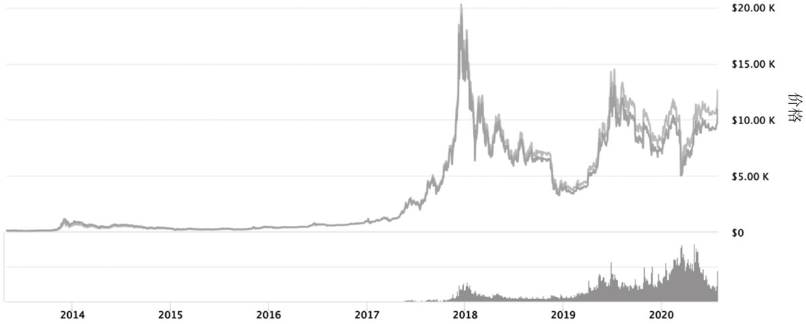
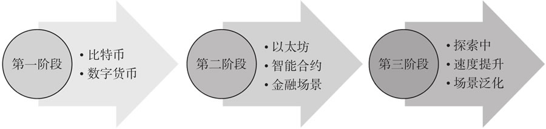
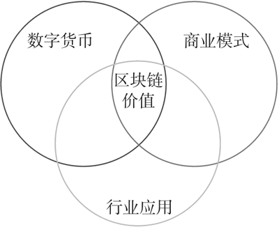

首页 > 编程笔记
区块链是什么
FinTech（金融科技）由 Financial（金融）和 Technology（科技）组合而成，是当下最受人们关注的方向之一，而区块链技术与生俱来的去信任化和防篡改等特性，使其受到各大金融科技企业的青睐，国内外金融监管机构、金融和科技巨头都在积极探索这一未来金融底层技术的应用。
中国香港蚂蚁金服 AlipayHK 上线了区块链跨境汇款服务，从中国香港地区到菲律宾的第一笔汇款总耗时仅 3 秒钟。SWIFT 启动了 SWIFT GPI（Global Payments Innovation），将跨境支付的时间从过去的几天降低到如今的十几分钟。美国的纳斯达克交易所也推出了基于区块链的股权交易平台 NASDAQ Linq，专注于服务非上市公司的股权管理和交易。美国金融巨头摩根大通在区块链平台发行 JPM Coin，用以提高银行企业客户的结算效率。
比特币、以太坊和超级账本是目前最为人们熟知的三大区块链技术。区块链是随着比特币的横空出世诞生的，以太坊在此基础上引入了图灵完备的智能合约机制，而超级账本则由IBM主导，使区块链技术得以在非金融领域落地开花。
近几年来“区块链”似乎横空出世，引起广泛的关注。区块链从何而来？它到底是一种什么样的技术？它是否意味着新一波的技术浪潮？它将如何改变这个世界？怀着这些问题，我们一同来探究区块链技术的前世今生。
从 2010 年到 2017 年的短短 8 年中，比特币的价格从几美分上涨到超过 20 000 美元，最高涨幅达到了数万倍。根据 CoinMarketCap 网站的数据显示，2018 年 1 月 7 日，数字货币整体市值曾达到 8357 亿美元的峰值。这个数据非常惊人，因为根据国际货币基金组织（IMF）的数据显示，2017 年全球也只有十多个国家的 GDP 超过 8000 亿美元。虚拟货币价格的大幅波动，引起了全世界范围内的关注。
下图展示了比特币的涨幅曲线。
隐藏在虚拟货币背后的是一种叫作“区块链”的神秘技术。它究竟是何物？又从何而来？
“区块链”源自英文 BlockChain，普遍的观点是，区块链技术发源的标志性事件是 2008 年中本聪（Satoshi Nakamoto）提出了比特币系统设计。
在中本聪最初发布的《比特币白皮书》中，Block 和 Chain 这两个词是单独出现的，而在后来的讨论中，人们逐渐将这两个词连接起来，以 BlockChain 来称呼这种技术。BlockChain（区块链）这种提法后来流传开来。
中本聪所提出的比特币系统是一个电子货币系统，在不需要第三方信用背书的情况下，可以实现完全点对点的电子货币转账。虽然许多人主要是将比特币作为一种虚拟的“币”，但从技术的角度来看，比特币系统中最重要的其实是分布式账本。
在中本聪的设计理念中，遍布全球的分布式节点共同维护这个不断延伸的链式账本，而所有关于“币”的权属的数据都完整地留存在分布式账本中，不会被篡改或删除。到目前为止，比特币系统仍然是区块链技术最具代表性的应用案例。但时至今日，区块链技术的范畴早已远远超过虚拟货币账本本身，而逐步发展成为能应用于多个行业和领域的综合化信息技术。
什么是区块链？从信息的组织形式来看，区块链是一个不断增长的数据链表，该数据链表的基本组成单位是一系列的“账本”（通常也称为“区块”），这些账本是通过密码学技术连接起来的。从网络结构来看，区块链上所有的数据由一系列分布式、相互独立的“节点”共同维护。以上这些数据和网络结构方面的特殊规则保障了区块链上的数据无法被随意篡改，也不会失序、丢失。
区块链是若干学科的交叉综合，它涵盖了分布式计算机系统、密码学，乃至商业和经济等课题。在区块链系统的设计中包含网络结构、数据结构、密码学算法和分布式系统的一致性算法（即区块链共识机制）等技术问题。
公有链也简称为“公链”，它对分布式节点没有特定要求，完全以算法、数据结构和节点共识机制来组织。在这类系统中，节点之间是没有任何信任约束的。
私有链一般适用于企业或组织内部，由内部管理者进行授权和管理。这类系统中，由于节点是由系统的发起者充分控制的，所以节点间是强信任的。
联盟链中，一般由若干相互独立的主体共同形成联盟，并由这些主体各自运行一个或多个节点，只有被信任的联盟成员才能加入节点网络。这种系统中的节点面对着一定的网络准入和监督机制。在实践中，联盟链常由行业内的企业及监管机构共同发起和维护。
区块链技术的演进过程大致可划分为三个阶段，如图 2 所示。
第一阶段以中本聪在 2008 年提出的比特币区块链为代表。比特币区块链的实质是利用区块链技术实现一种分布式的记账机制，并以此为基础实现比特币虚拟货币的交易，其核心技术点包含 UTXO 交易模型、链式账本数据结构、加密技术，以及基于“工作量证明”的共识机制等。
比特币区块链是公有链，由全球的分布式节点共同维护。同时代的区块链应用还有 Namecoin、Colored Coins 以及 Metacoins 等。
比特币区块链有一些局限性。例如，UTXO 模型缺少对状态的支持，只适合简单、一次性的交易合约。这些限制使得它很难应对金融领域中各种较复杂的场景。还有一些专家认为比特币区块链中的“工作量证明”共识机制过于消耗计算量，平均 10 分钟出一个区块，效率很低。
区块链技术第二阶段的主要特点是引入了“智能合约”理念，成为可编程的区块链系统，进而支持简单的金融合约业务场景。和第一阶段的区块链技术相比，这个阶段的区块链技术通过图灵完备的编程语言，让开发者们能够创建合约，实现去中心化应用，以太坊和Fabric是这个阶段的主要代表。其中，以太坊是继比特币之后一个很具影响力的公有链协议，它采用了合约账户的概念，能够通过执行智能合约实现两个账户之间价值和状态的转换。
Fabric 是由 IBM 主导开发的一个联盟链，支持用容器技术运行智能合约代码，对高级语言开发有良好的开放性。该阶段的区块链技术在共识算法方面也有很多创新。
第三个阶段是区块链在应用领域、效率，以及安全性方面的扩展，即目前的发展阶段。可能的技术发展方向包含：
据笔者观察，这个阶段目前尚处于探索阶段，还未有标志性的、被大规模运用的系统出现。
如图 3 所示，我们需要从多个维度来寻找这些问题的答案。
首先，谈论区块链的影响时无法回避的是数字货币的话题。前文提到，整个虚拟货币市场的市值在 2018 年年初曾达到过峰值，随后却一路下跌。例如，比特币的总市值较之前峰值回落了八成多。另外，由于比特币等虚拟货币的价格波动较大、结算便利性较差，在世界范围内一直未大规模地应用于结算和支付等场景，我国的法定数字货币 DCEP 也尚在研究过程中。
其次，从区块链技术的商业模式看，较为受关注的有 ICO、STO 等。在这些模式中，区块链技术主要被用于产生并记录某种虚拟的权益凭证，有时也被称为 Token。而投资人可以投资这些权益凭证，并通过区块链系统进行查询、交易等。
目前，上述模式并未得到有效推广，主要原因在于各个国家和地区对它们的监管和规范方法还未完备。例如，2017 年美国的证券监管部门曾发布公告，宣布要根据每个 ICO 项目的实际情况，考虑将其纳入监管范围。在我国，2017 年央行等多个部委也明确将 ICO 这种模式定义为非法融资行为。
现阶段，基于区块链技术的商业模式创新还尚未有重大突破，人们还需要结合各个国家和地区的法律法规，探索具有创新性的区块链商业模式。
中国香港蚂蚁金服 AlipayHK 上线了区块链跨境汇款服务，从中国香港地区到菲律宾的第一笔汇款总耗时仅 3 秒钟。SWIFT 启动了 SWIFT GPI（Global Payments Innovation），将跨境支付的时间从过去的几天降低到如今的十几分钟。美国的纳斯达克交易所也推出了基于区块链的股权交易平台 NASDAQ Linq，专注于服务非上市公司的股权管理和交易。美国金融巨头摩根大通在区块链平台发行 JPM Coin，用以提高银行企业客户的结算效率。
比特币、以太坊和超级账本是目前最为人们熟知的三大区块链技术。区块链是随着比特币的横空出世诞生的，以太坊在此基础上引入了图灵完备的智能合约机制，而超级账本则由IBM主导，使区块链技术得以在非金融领域落地开花。
近几年来“区块链”似乎横空出世，引起广泛的关注。区块链从何而来？它到底是一种什么样的技术？它是否意味着新一波的技术浪潮？它将如何改变这个世界？怀着这些问题，我们一同来探究区块链技术的前世今生。
区块链
2010 年 5 月的一天，美国一个名叫 Laszlo 的年轻程序员，用 10 000 枚比特币购买了两个比萨饼的优惠券。按照 2017 年 12 月 17 日比特币的最高价格约 20 000 美元一枚估算，当时每个比萨饼大约花费了 1 亿美元，这应该是有史以来最昂贵的比萨了。从 2010 年到 2017 年的短短 8 年中，比特币的价格从几美分上涨到超过 20 000 美元，最高涨幅达到了数万倍。根据 CoinMarketCap 网站的数据显示，2018 年 1 月 7 日，数字货币整体市值曾达到 8357 亿美元的峰值。这个数据非常惊人，因为根据国际货币基金组织（IMF）的数据显示，2017 年全球也只有十多个国家的 GDP 超过 8000 亿美元。虚拟货币价格的大幅波动，引起了全世界范围内的关注。
下图展示了比特币的涨幅曲线。

图 1 比特币价格曾经快速上涨
图 1 比特币价格曾经快速上涨
隐藏在虚拟货币背后的是一种叫作“区块链”的神秘技术。它究竟是何物？又从何而来？
“区块链”源自英文 BlockChain，普遍的观点是，区块链技术发源的标志性事件是 2008 年中本聪（Satoshi Nakamoto）提出了比特币系统设计。
在中本聪最初发布的《比特币白皮书》中，Block 和 Chain 这两个词是单独出现的，而在后来的讨论中，人们逐渐将这两个词连接起来，以 BlockChain 来称呼这种技术。BlockChain（区块链）这种提法后来流传开来。
中本聪所提出的比特币系统是一个电子货币系统，在不需要第三方信用背书的情况下，可以实现完全点对点的电子货币转账。虽然许多人主要是将比特币作为一种虚拟的“币”，但从技术的角度来看，比特币系统中最重要的其实是分布式账本。
在中本聪的设计理念中，遍布全球的分布式节点共同维护这个不断延伸的链式账本，而所有关于“币”的权属的数据都完整地留存在分布式账本中，不会被篡改或删除。到目前为止，比特币系统仍然是区块链技术最具代表性的应用案例。但时至今日，区块链技术的范畴早已远远超过虚拟货币账本本身，而逐步发展成为能应用于多个行业和领域的综合化信息技术。
什么是区块链？从信息的组织形式来看，区块链是一个不断增长的数据链表，该数据链表的基本组成单位是一系列的“账本”（通常也称为“区块”），这些账本是通过密码学技术连接起来的。从网络结构来看，区块链上所有的数据由一系列分布式、相互独立的“节点”共同维护。以上这些数据和网络结构方面的特殊规则保障了区块链上的数据无法被随意篡改，也不会失序、丢失。
区块链是若干学科的交叉综合，它涵盖了分布式计算机系统、密码学，乃至商业和经济等课题。在区块链系统的设计中包含网络结构、数据结构、密码学算法和分布式系统的一致性算法（即区块链共识机制）等技术问题。
区块链技术的演进
首先，区块链技术在发展过程中衍生出了多种类别。最常见的是根据节点间的组织形式和决策机制将区块链系统分为公有链、私有链和联盟链三类，具体如下表所示。| 公有链 | 联盟链 | 私有链 | |
|---|---|---|---|
| 特点 | 节点任意接入，无信任， 规则驱动 | 由联盟准许的节点组成网络，可预选节点来主导共识机制；网络有一定的准 入和监督机制 | 节点受到充分控制，节点间强信任；网络有严格的准入和监督机制 |
| 案例 | 比特币、以太坊 | Quorum, Fabric | 企业内部的区块链系统一般属此类 |
公有链也简称为“公链”，它对分布式节点没有特定要求，完全以算法、数据结构和节点共识机制来组织。在这类系统中，节点之间是没有任何信任约束的。
私有链一般适用于企业或组织内部，由内部管理者进行授权和管理。这类系统中，由于节点是由系统的发起者充分控制的，所以节点间是强信任的。
联盟链中，一般由若干相互独立的主体共同形成联盟，并由这些主体各自运行一个或多个节点，只有被信任的联盟成员才能加入节点网络。这种系统中的节点面对着一定的网络准入和监督机制。在实践中，联盟链常由行业内的企业及监管机构共同发起和维护。
区块链技术的演进过程大致可划分为三个阶段，如图 2 所示。

图 2 区块链技术的演进过程
图 2 区块链技术的演进过程
第一阶段以中本聪在 2008 年提出的比特币区块链为代表。比特币区块链的实质是利用区块链技术实现一种分布式的记账机制，并以此为基础实现比特币虚拟货币的交易，其核心技术点包含 UTXO 交易模型、链式账本数据结构、加密技术，以及基于“工作量证明”的共识机制等。
比特币区块链是公有链，由全球的分布式节点共同维护。同时代的区块链应用还有 Namecoin、Colored Coins 以及 Metacoins 等。
比特币区块链有一些局限性。例如，UTXO 模型缺少对状态的支持，只适合简单、一次性的交易合约。这些限制使得它很难应对金融领域中各种较复杂的场景。还有一些专家认为比特币区块链中的“工作量证明”共识机制过于消耗计算量，平均 10 分钟出一个区块，效率很低。
区块链技术第二阶段的主要特点是引入了“智能合约”理念，成为可编程的区块链系统，进而支持简单的金融合约业务场景。和第一阶段的区块链技术相比，这个阶段的区块链技术通过图灵完备的编程语言，让开发者们能够创建合约，实现去中心化应用，以太坊和Fabric是这个阶段的主要代表。其中，以太坊是继比特币之后一个很具影响力的公有链协议，它采用了合约账户的概念，能够通过执行智能合约实现两个账户之间价值和状态的转换。
Fabric 是由 IBM 主导开发的一个联盟链，支持用容器技术运行智能合约代码，对高级语言开发有良好的开放性。该阶段的区块链技术在共识算法方面也有很多创新。
第三个阶段是区块链在应用领域、效率，以及安全性方面的扩展，即目前的发展阶段。可能的技术发展方向包含：
- 利用分片、跨链等技术提升区块链的记录效率，接近高并发场景下的需求；
- 利用新型的密码技术提升区块链系统的安全性，例如密钥管理技术、抗量子攻击密码等；
- 提升智能合约的开放性，增加适用的行业场景等。
据笔者观察，这个阶段目前尚处于探索阶段，还未有标志性的、被大规模运用的系统出现。
区块链能否“改变世界”
加拿大学者、数字经济领域的知名专家 Don Tapscott 曾将区块链称为一场“革命”，并认为区块链的底层技术可以改变货币、商业和世界。事实真是如此吗？区块链真能像工业化、互联网化一样改变世界，从而成为新一波技术浪潮吗？如图 3 所示，我们需要从多个维度来寻找这些问题的答案。

图 3 从多个维度看区块链的价值
图 3 从多个维度看区块链的价值
首先，谈论区块链的影响时无法回避的是数字货币的话题。前文提到，整个虚拟货币市场的市值在 2018 年年初曾达到过峰值，随后却一路下跌。例如，比特币的总市值较之前峰值回落了八成多。另外，由于比特币等虚拟货币的价格波动较大、结算便利性较差，在世界范围内一直未大规模地应用于结算和支付等场景，我国的法定数字货币 DCEP 也尚在研究过程中。
其次，从区块链技术的商业模式看，较为受关注的有 ICO、STO 等。在这些模式中，区块链技术主要被用于产生并记录某种虚拟的权益凭证，有时也被称为 Token。而投资人可以投资这些权益凭证，并通过区块链系统进行查询、交易等。
目前，上述模式并未得到有效推广，主要原因在于各个国家和地区对它们的监管和规范方法还未完备。例如，2017 年美国的证券监管部门曾发布公告，宣布要根据每个 ICO 项目的实际情况，考虑将其纳入监管范围。在我国，2017 年央行等多个部委也明确将 ICO 这种模式定义为非法融资行为。
现阶段，基于区块链技术的商业模式创新还尚未有重大突破，人们还需要结合各个国家和地区的法律法规，探索具有创新性的区块链商业模式。
关注公众号「站长严长生」，在手机上阅读所有教程，随时随地都能学习。内含一款搜索神器，免费下载全网书籍和视频。

微信扫码关注公众号